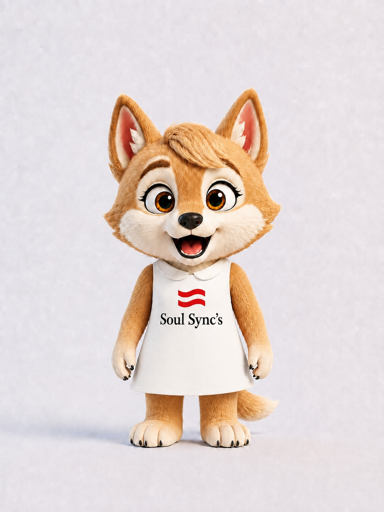

01
自分を知る
理想の生き方や価値観を整理し、自分らしさを見つけていきます。
SOUL SYNC’S CAREER SUPPORT
どんな仕事がしたいか。
どんな毎日を送りたいか。
どんな自分になりたいか。
まだ答えが見つかっていなくても、大丈夫。
あなたの理想から、
これからのキャリアを一緒に考えよう。

PROBLEMS
毎日なんとなく仕事をしている。
将来のことを考えると、少し不安になる。
でも、自分が本当はどうしたいのかは、まだよく分からない。
そんな状態で、ひとりで答えを出すのは簡単ではありません。

今の仕事が
「つまらない」と感じる

給料が低くて、
このままでいいのか不安

転職したい気持ちはあるけど、
自分に合う仕事が分からない

やりたいことが
まだ見つかっていない

自分らしく生きるって
何だろうと思う

相談したいけど、
誰に話せばいいか分からない
仕事を辞めたいと思うことも、将来が不安になることも。
きっと、何かを変えたいと思っているからこその気持ち。
でも、今すぐ答えを出す必要はありません。
まずは、そのモヤモヤを一緒に整理するところから始めてみませんか？
ABOUT
ソウルシンクスは、あなたが大切にしたい生き方や働き方をもとに、これから積みたい経験や、成長できる環境を一緒に考えます。
大切にしているのは、「とにかく転職すること」ではなく、自分らしく生きるために必要な選択肢を整理すること。
仕事も、成長も、仲間との出会いも、すべてはそのための手段のひとつです。
理想の生き方や価値観を整理し、自分らしさを見つけていきます。
仕事や経験を通じて成果を出しながら成長し、選択肢を広げます。
同じ関心や目標を持つ仲間との出会いが、新しい一歩につながります。
CAREER DESIGN
無料キャリア設計では、ただ仕事を紹介するのではなく、
を一緒に整理していきます。
頭の中がモヤモヤしたまま動くのではなく、自分にとって納得感のある未来のつくり方を考えるための時間です。
どんな生き方をしたいか、どんな働き方をしたいかを一緒に考えます。
今の状況や悩みを整理し、現在地を明らかにします。
理想と現状の違いを整理し、どんな課題があるのかを考えます。
そのギャップを埋めるために、今どんな経験や力が必要かを整理します。
これからの選択肢を一緒に考え、納得感のある一歩を見つけます。
以下は説明のための会話例で、実際の相談記録ではありません。
SUPPORT
仕事が決まることは、ゴールではなくスタートです。ソウルシンクスは、現場で成果を出すためのサポートから、将来のキャリアを見据えた能力開発、個人の目標達成に向けた伴走まで、継続的に関わります。
定期面談や日常的な相談、現場フォローを通じて、悩みや課題を整理します。今の仕事で成果を出し、安心して前に進めるようにサポートします。
日々の経験を振り返り、学びを次の行動につなげます。研修や未来合宿を通じて視野を広げ、今後の方向性を考える時間も大切にします。
目の前の仕事で成果を出しながら、将来にもつながる力を身につけることを重視します。経験を積み重ね、次の選択肢を広げていけるよう支援します。
現場だけではなく、個人の活動や目標に対しても、必要に応じてKPIの整理や進捗フォローを行います。「自分が実現したいこと」に向けて、仕事以外の視点も含めて伴走します。
目の前の成果が、自信になる。
積み重ねた経験が、未来の選択肢になる。
COMMUNITY

新しいことを知る。
好きなことを楽しむ。
同じ目標に向かって挑戦する。
ソウルシンクスには、さまざまな関心や目標を持つ仲間とのつながりがあります。外部の人も参加できるコミュニティがあり、新しい出会いが次の一歩につながることもあります。
AIの最新情報や活用方法を学び、共有するコミュニティ。仕事や日常に活かせる視点を広げます。
コミュニティ人数：約20名
新しい仲間も募集中！

体を動かしながら、仕事や立場を超えて交流できるコミュニティ。社外の方の参加も大歓迎です。
総参加者：60名以上

医療従事者が交流し、学び合うコミュニティ。医療従事者のセカンドキャリア支援にも力を入れています。
セミナー累計参加者：80名以上

独立や起業を目指す仲間が集まり、学び合うコミュニティ。独立支援にも取り組んでいます。
独立・起業への挑戦をサポート

そんなきっかけになる出会いも、ソウルシンクスが大切にしている価値のひとつです。
外部の方も参加できるコミュニティがあります。参加条件や活動内容はコミュニティによって異なります。
WORK OPTIONS
ソウルシンクスでは、キャリア設計で明らかになったあなたの強みや価値観をもとに、仕事や働き方の選択肢をご提案します。
大切なのは、今ある仕事に無理に自分を当てはめることではなく、理想の未来に近づくための手段として、仕事を考えることです。


※ロードマップは一例です。実際のキャリア設計では、あなたの経験や希望に合わせて、一緒に道筋を考えます。
自分だけのキャリア設計を相談するFLOW
まだ、やりたいことが決まっていなくても大丈夫。今の気持ちを聞かせてもらうところから、一緒に考えていきます。
フォームからお問い合わせください。相談したいことがまとまっていなくても大丈夫です。
初回のカジュアル相談の日程を、ご都合に合わせて調整します。
今の悩みや、これからやってみたいことなど、気軽にお話しください。一緒に理想の未来を考えます。
あなたの希望や目標に合わせて、必要な経験や仕事など、次の一歩をご提案します。
必要に応じて、仕事や成長、仲間とのつながりを通じて、あなたの目標に向けた一歩をサポートします。
FAQ
はい、大丈夫です。ソウルシンクスでは、転職を前提に無理に話を進めるのではなく、まず今の悩みや理想を整理するところから、一緒に考えていきます。まだ何がしたいか分からなくても、今の気持ちを聞かせてください。
無料キャリア設計の相談は無料です。まずはお気軽に、今のお悩みや理想をお聞かせください。
営業、人材、クリエイティブ、ジム関連など、ご本人の目標や適性に合わせて選択肢を考えます。ご紹介できる内容はタイミングによって異なります。
はい。定期面談や日常相談、振り返り、研修など、必要に応じて継続的にサポートします。
外部の方も参加できるコミュニティがあります。参加条件や活動内容はコミュニティによって異なりますので、ご相談時にご確認ください。
オンラインでの相談についても、日程調整の際にご希望をお聞かせください。
業務委託を中心としており、雇用形態や契約条件は案件によって異なります。具体的な条件は個別にご案内します。
FINAL CTA
今の仕事のことでも、将来のことでも、まとまっていない気持ちでも。
まずは、あなたの話を聞かせてください。
無料キャリア設計で、これからの一歩を一緒に考えます。
まずは気軽にお問い合わせAPPLICATION
以下のフォームに必要事項をご入力ください。
内容を確認後、担当よりご連絡いたします。